Second run of this lab. My first write-up was short, so this one replaces it. DFW 1-2-3-4 is vDefend's way of rolling out microsegmentation in stages: assess, then shared services, then environments, then apps. Everything is driven from the Security Services Platform (SSP), which pushes the groups and rules into NSX. Click any photo to enlarge it.
Lab topology
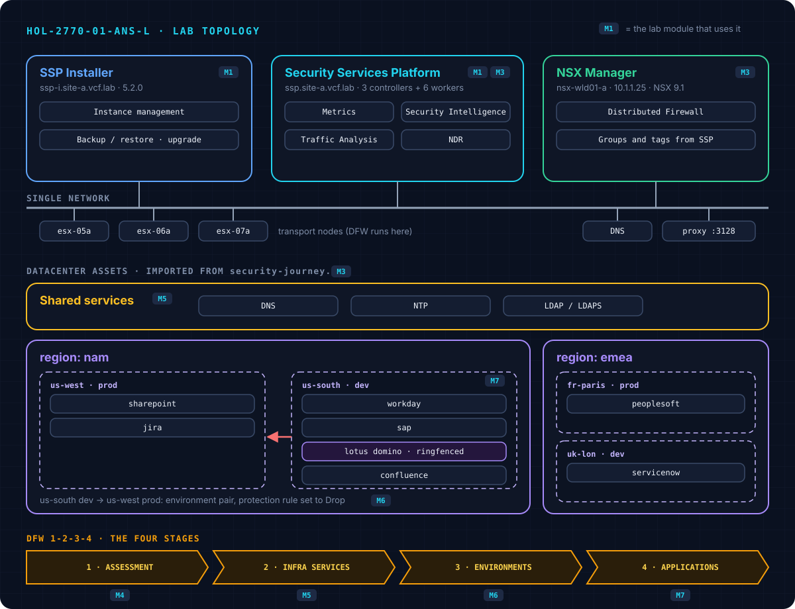
DiagramSSP, its installer and NSX on one network, the assets imported from the CSV, and the four stages with the module for each.
Module 1: vDefend and SSP architecture
Started in the SSP installer. It only handles lifecycle: deploying, backing up and upgrading the platform. One instance is deployed:
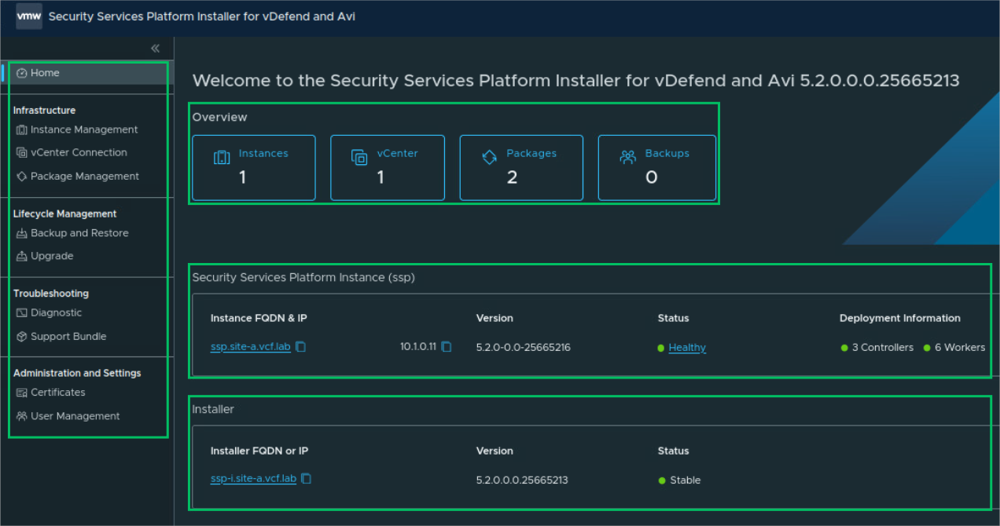
Photo 2SSP Installer 5.2.0: 1 instance, 1 vCenter, 2 packages. ssp.site-a.vcf.lab at 10.1.0.11, Healthy, 3 controllers and 6 workers.
Clicking the FQDN in Instance Management opens the SSP itself:
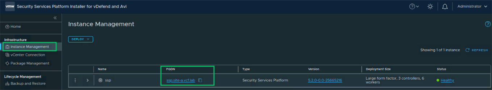
Photo 3Instance Management: the ssp instance, large form factor, Healthy.
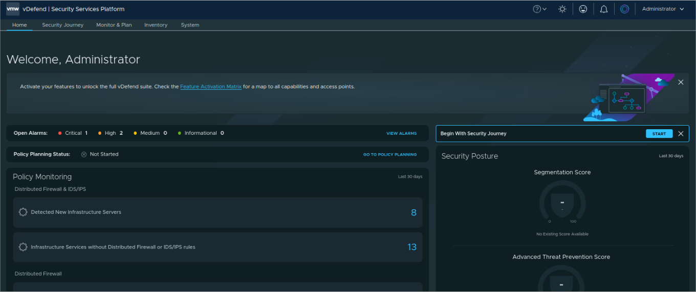
Photo 4The SSP home page: alarms, policy monitoring, and no security score yet.
Platform and features
System > Platform & Features. Metrics and Security Intelligence are already activated in this lab:
Why stagesGoing straight to app rules in a big datacenter means writing thousands of rules before anything is protected. Shared services and zones first cut most of the risk with a handful of rules.
Module 3: Importing datacenter assets
The datacenter being modelled: shared services on top, then region, zone, environment, application and tier:
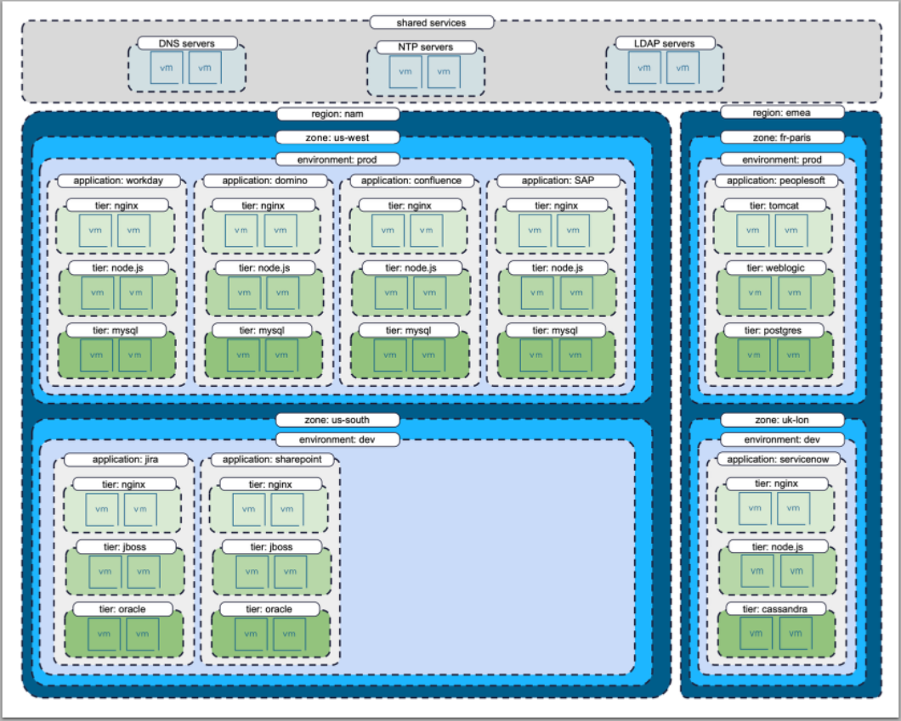
Photo 12Regions nam and emea, their zones, prod and dev environments, apps and tiers.
Monitor & Plan > Policy Planning, import the CSV. It lists every asset and where it sits in that hierarchy:
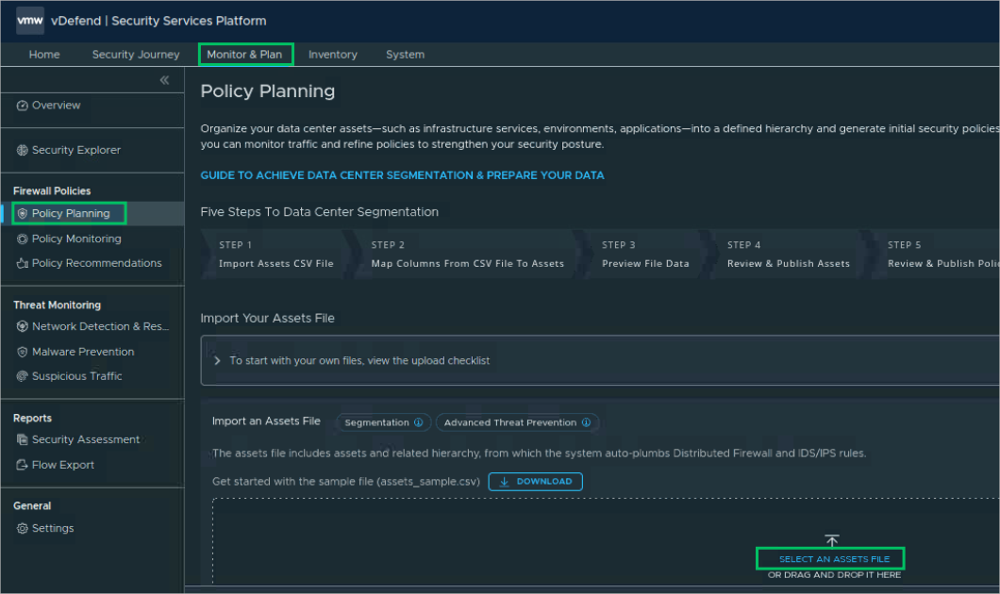
Photo 13Policy Planning: five steps, Select an Assets File.
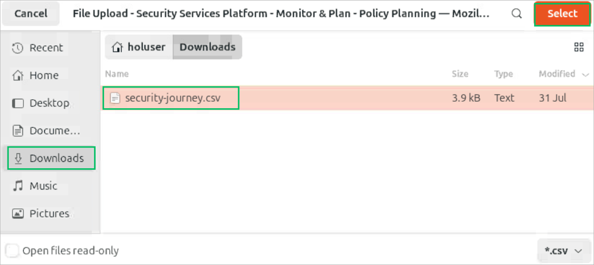
Photo 14security-journey.csv from Downloads.
Map the CSV columns to the asset fields:
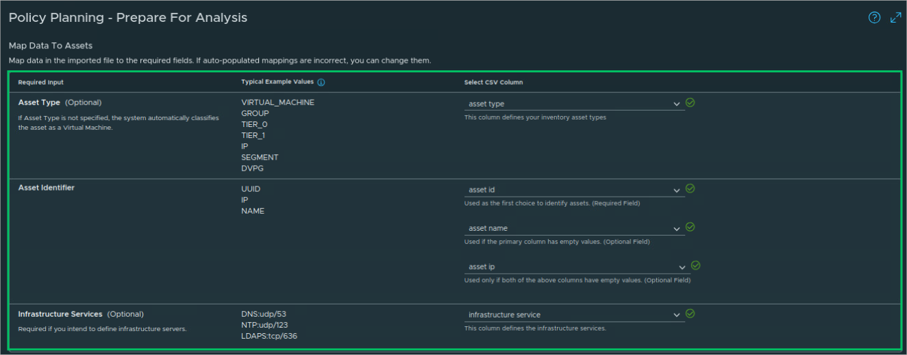
Photo 15Asset type, asset id, name and IP, and the infrastructure service column.
Then the hierarchy, region down to tier:
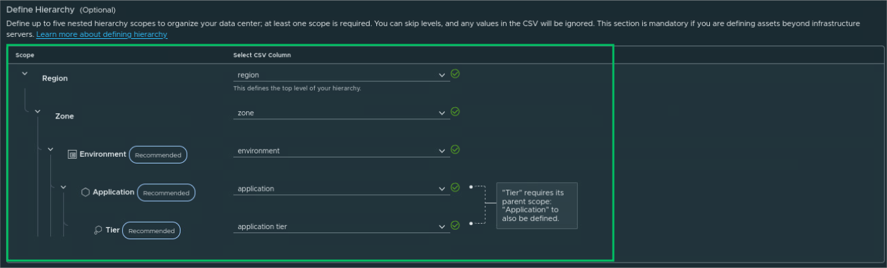
Photo 16Region, Zone, Environment, Application and Tier, each mapped to a CSV column.
Preview, then Start Analysis. Takes a few minutes:
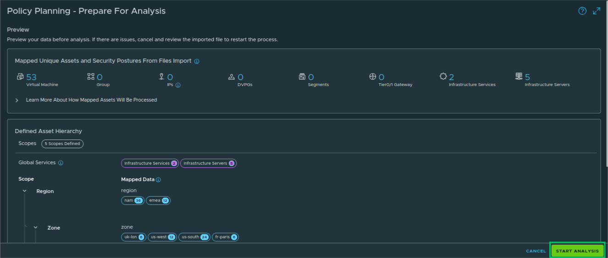
Photo 1753 VMs, 2 infrastructure services, 5 infrastructure servers, regions nam and emea, zones uk-lon, us-west, us-south and fr-paris.
When it's done, each category can be reviewed and published one by one, or all at once:
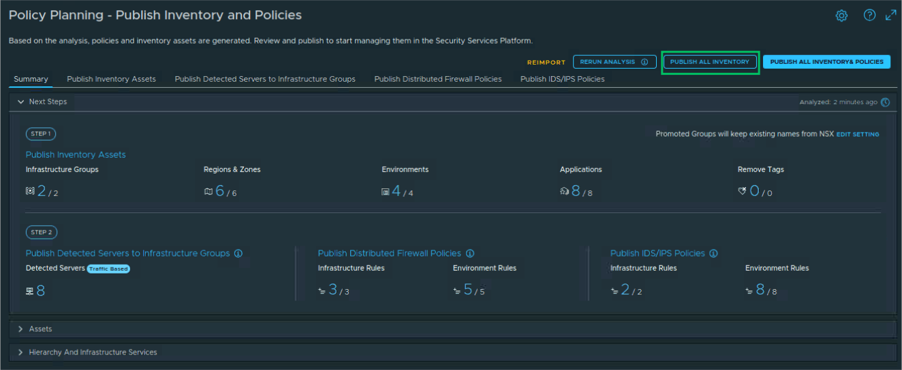
Photo 182 infrastructure groups, 6 regions and zones, 4 environments, 8 applications, 8 detected servers, plus recommended DFW and IDS/IPS rules.
Check it in NSX
Inventory > Groups, filtered on Created By: ssp_user:admin:
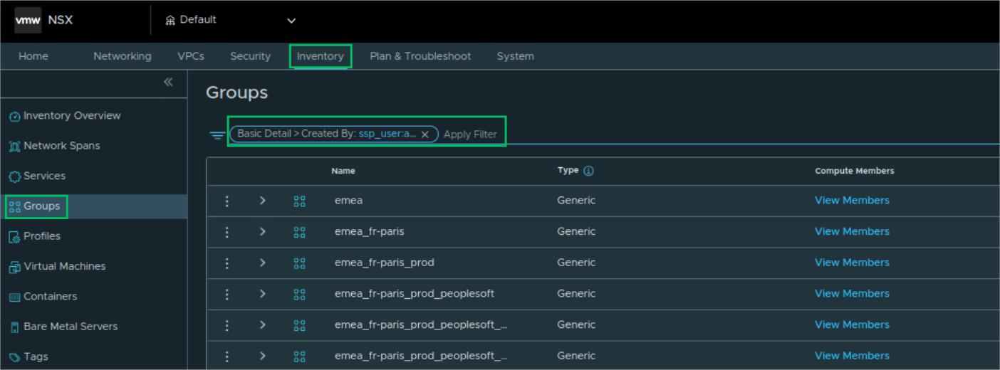
Photo 19Groups created by SSP: emea, emea_fr-paris, emea_fr-paris_prod and so on.
The groups are tag-based, and the tags come from the CSV. So new VMs only need the right tags to land in the right groups:
Photo 29Executive summary with both scores and the breakdown.
The overview page is the one you'd show someone to justify the project:
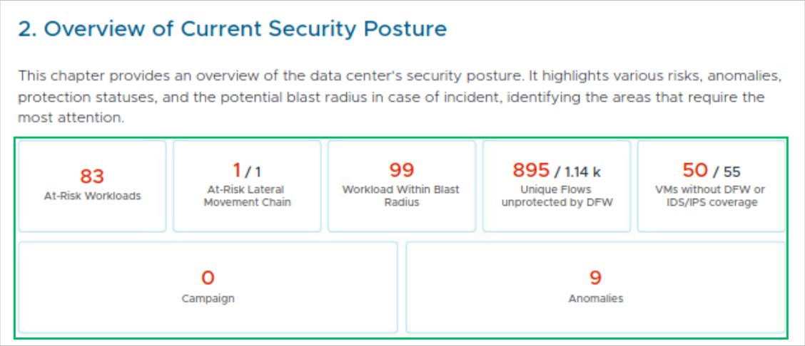
Photo 3083 at-risk workloads, 99 within blast radius, 895 of 1.14k flows unprotected by DFW, 50 of 55 VMs without DFW or IDS/IPS.
Module 5: Stage 2, shared services
Workloads should only reach the approved DNS, NTP, LDAP and so on. Anything pretending to be one of those gets blocked. Every workload uses these services, so a few rules cover a lot:
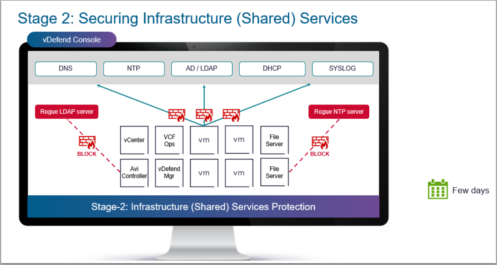
Photo 31DNS, NTP, AD/LDAP, DHCP and syslog, with rogue LDAP and NTP servers blocked.
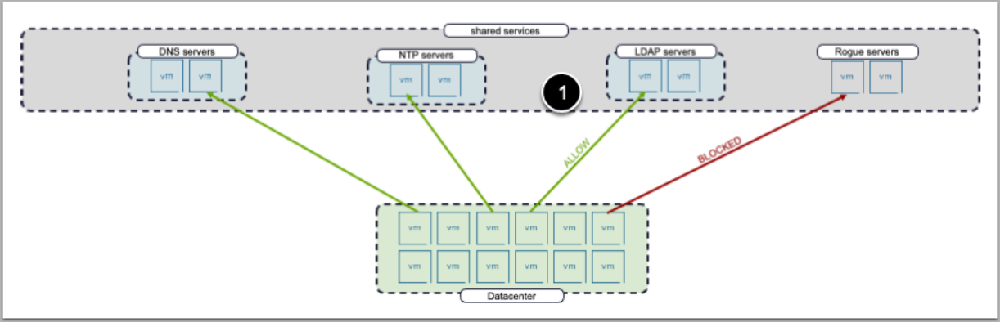
Photo 32Allowed to the real DNS, NTP and LDAP servers, blocked to the rogue ones.
Policy Monitoring > Infrastructure Services lists the services from the CSV. LDAP, LDAP-UDP and LDAPS have no rules yet:
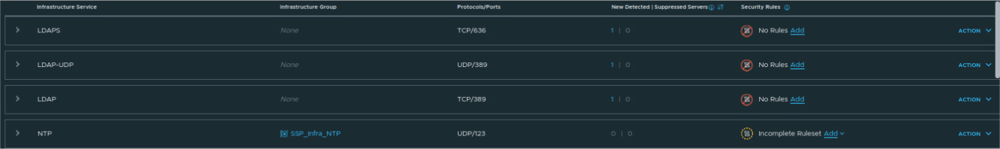
Photo 33LDAPS, LDAP-UDP and LDAP with no rules, NTP with an incomplete ruleset.
SSP also found servers from the traffic that weren't in the CSV. Update the groups with them:
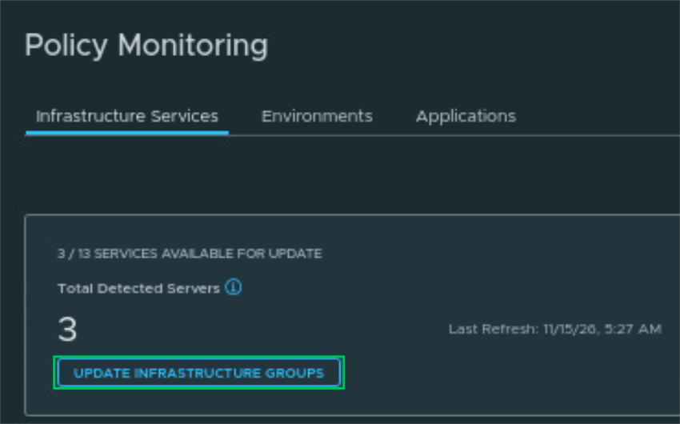
Photo 343 of 13 services available for update, Update Infrastructure Groups.
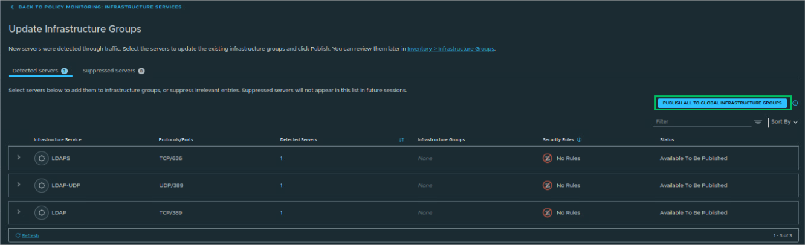
Photo 35Detected servers for LDAPS, LDAP-UDP and LDAP. Publish All to Global Infrastructure Groups.
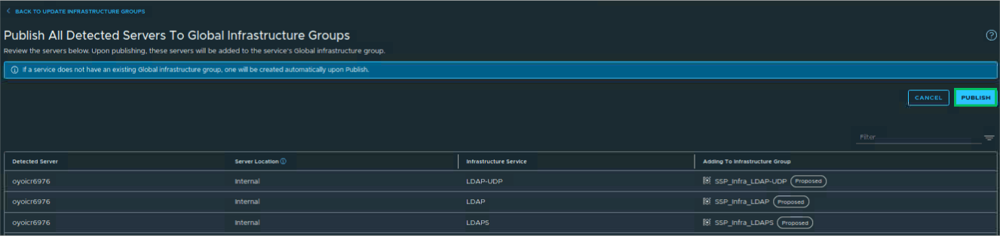
Photo 36oyoicr6976 added to SSP_infra_LDAP-UDP, LDAP and LDAPS.
Greyed-out PublishI'd already published these while playing around with the lab, so Publish is greyed out in my screenshots. If you follow the steps in order, it works.
Back on the DFW rules, set the lockdown to Yes and publish again. An allow on its own doesn't stop a VM from using some other NTP server. The lockdown rejects NTP to anything that isn't in the group:
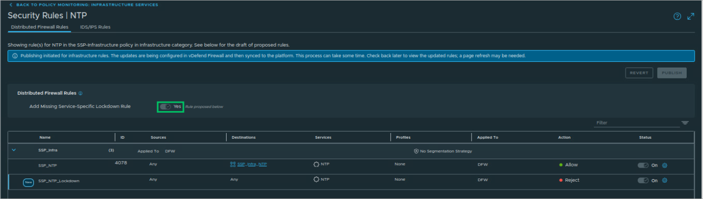
Photo 40SSP_NTP Allow and SSP_NTP_Lockdown Reject.
Turn on Add Lockdown Rule To All Services before applying:
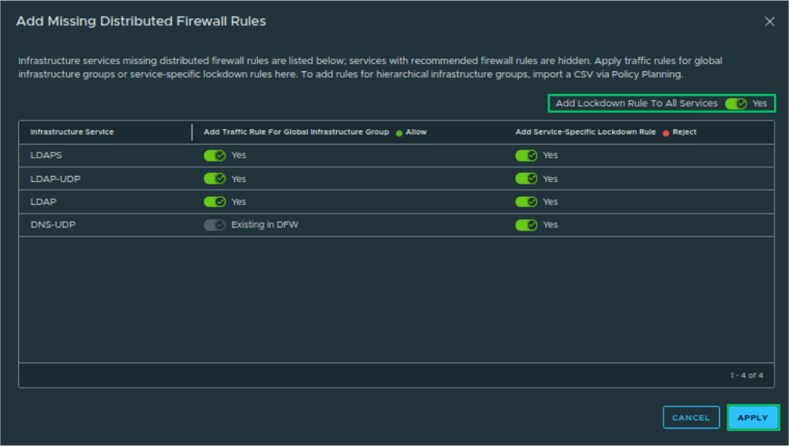
Photo 43LDAPS, LDAP-UDP, LDAP and DNS-UDP, each with an allow and a lockdown.
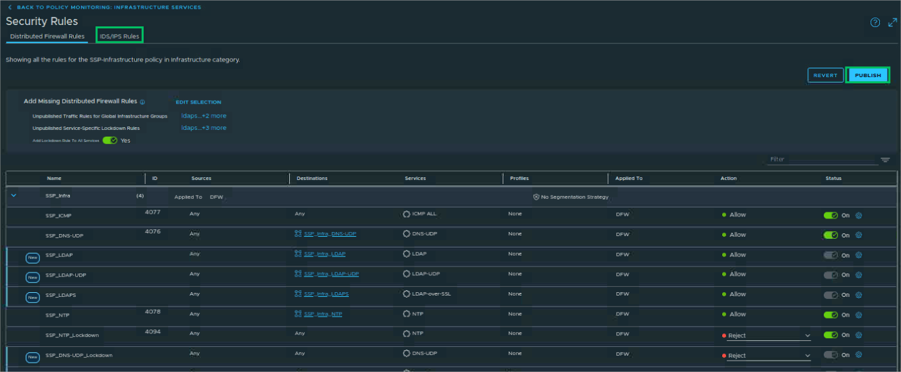
Photo 44Review before publishing.
Same steps on the IDS/IPS Rules tab. Then in NSX, Security > Distributed Firewall > Category Specific Rules > Infrastructure:
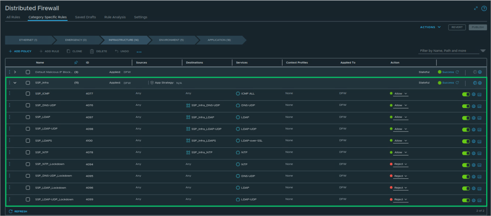
Photo 45SSP_Infra: allows for ICMP, DNS-UDP, LDAP, LDAP-UDP, LDAPS and NTP, and the lockdown rejects.
Recalculated the scores. Normally they go up here:
Photo 46Segmentation 27, ATP 69. Same as before for me, since I'd published early.
Module 6: Stage 3, environment segmentation
Block traffic between environments by default and allow only the exceptions:
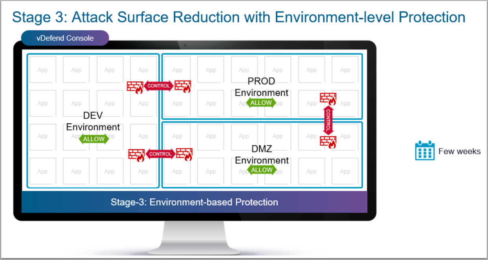
Photo 47Prod, dev and DMZ separated, with controlled exceptions.
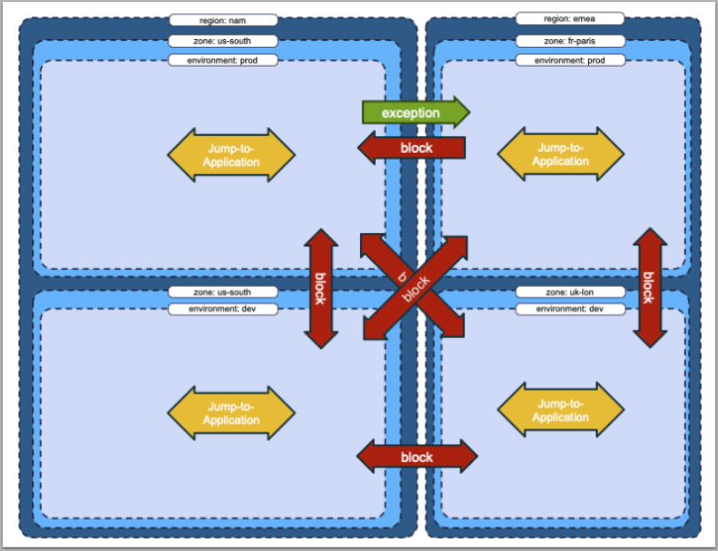
Photo 48Inside each environment, Jump to Application. Between them, block, plus exceptions.
In Policy Planning, Publish Distributed Firewall Policies > Environment Rules, publish the defaults:
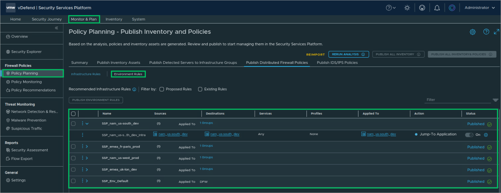
Photo 49One policy per environment plus SSP_Env_Default, all Published.
In NSX under Environment, the action is Jump to Application. Traffic inside an environment isn't allowed here. It moves on to the Application category and gets checked there:
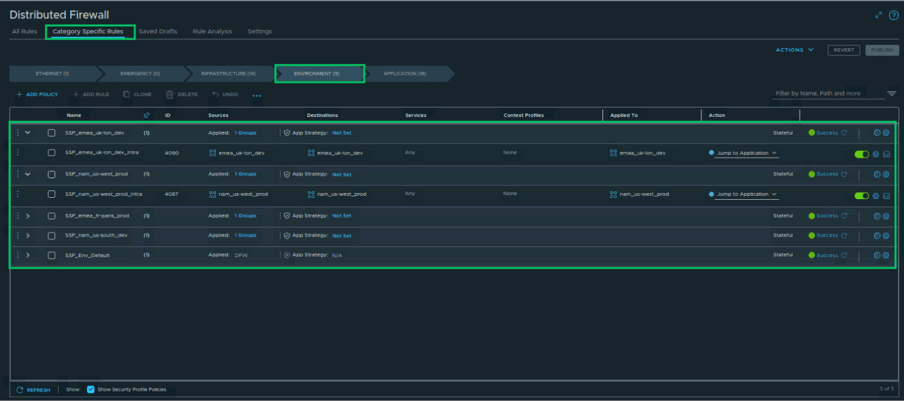
Photo 50Environment policies with Jump to Application rules.
Environment pairs
Policy Monitoring > Environments > Environment Pair List. 12 pairs, none with a protection rule yet:
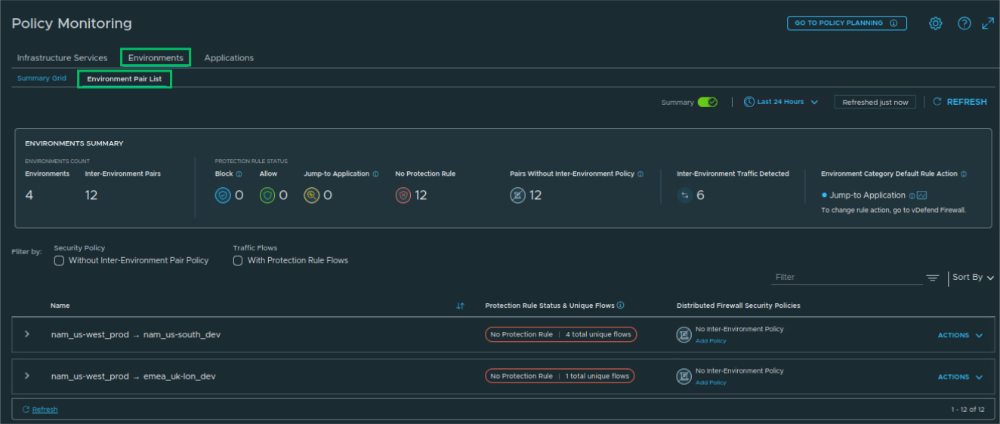
Photo 514 environments, 12 pairs, 12 without an inter-environment policy, 6 with traffic.
nam_us-south_dev to nam_us-west_prod has 8 unique flows. Clicking the 8 lists them:
Photo 528 unique flows hitting the default rule, Jump to Application.Photo 53All 8: ORACLE_TNS on TCP 1521 from dev to prod, Unprotected. Flows can be exported as CSV too.
Dev reaching a prod Oracle DB is exactly the kind of thing you want to see before blocking. Ran a recommendation from the pair's Actions:
Photo 54Actions: Run Traffic-Based Recommendation.
Photo 55Start Recommendation.Photo 56nam_us-south_dev to nam_us-west_prod, Jump to Application, last 1 hour.
Photo 57Exclude multicast and broadcast flows, Start Discovery.Photo 58Discovery started.
Wait for Ready to Publish, then Review & Publish from the three dots:
Photo 59Ready to Publish, Review & Publish.Photo 602 rules: Rule_1 for the observed flows and the pair's protection rule. Proceed, then Publish.
Last step: change the pair's protection rule from Jump to Application to Drop. The observed flows still go on to the app rules, and everything else between dev and prod gets dropped:
Photo 61The pair now has 1 policy and 2 rules, protection rule Jump to Application.Photo 62Edit Protection Rule Action: Drop, Publish.
Recalculated. Small jump for me because of the early publishing. Done in order, it's bigger:
Photo 63Calculating.Photo 64Segmentation 28, ATP 69.
Module 7: Stage 4, application microsegmentation
Map workloads to apps, then ringfence each app:
Photo 65VMs tagged by application.Photo 66Ringfenced apps, unauthorized lateral movement blocked.
Inventory > Applications, 8 apps, all regular:
Photo 67Application criticality, type and flow prioritization for 8 apps.
Set sharepoint, jira, workday and sap to Critical:
Photo 704 critical with flow prioritization on, 4 regular.
Protect an application
Three directions per app: incoming, outgoing and inside the app:
Photo 71Incoming and outgoing: allow or drop. Intra-application: allow.
For lotus domino, Run Traffic-Based Recommendation:
Photo 72nam_us-south_dev_lotus domino: 144 unique flows, no policy applied.
Strategy Ringfencing: traffic inside the app is allowed, and what goes in and out is watched so the rules come from real flows:
Photo 73Application category, last 1 hour.Photo 74Ringfencing selected.
Photo 75Discovery started.
Ready to Publish, then Review & Publish:
Photo 76lotus domino Ready to Publish. The environment recommendation is already Published.Photo 777 recommended rules, 1 group. Publish.
In NSX under Application, the new policy with ingress and egress rules per service:
Photo 78Policy_1: ingress for HTTPS and MySQL, egress for ORACLE_TNS, PostgreSQL and VMware-UpdateMgr, then allow_intra_rule and default_allow_rule.
One more stepThe default rule is still Allow here. I changed it to Drop afterwards but forgot to take a screenshot. Do it, otherwise the ringfence doesn't block anything.
Key takeaways
SSP turns a CSV into NSX groups and tags, so the hierarchy is defined once.
Measure first. The score and report show where the gaps are.
An allow without a lockdown behind it doesn't restrict anything.
Recommendations come from real flows: review, publish, then flip the default to Drop.
Broad to narrow: shared services, environments, then apps.
Lab completed
CertificateCompleted November 15, 2026, in 180 minutes.